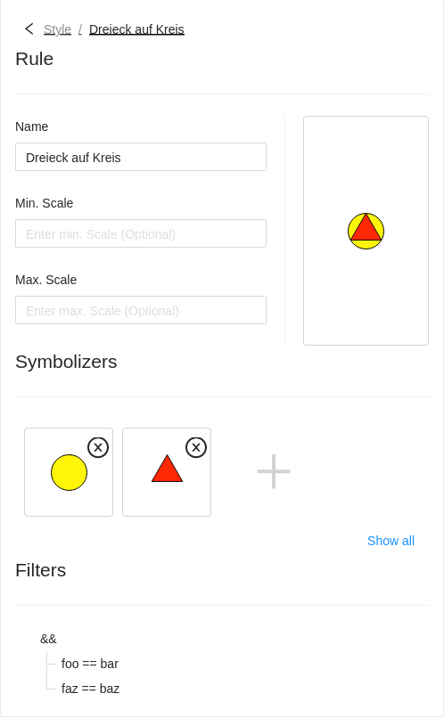
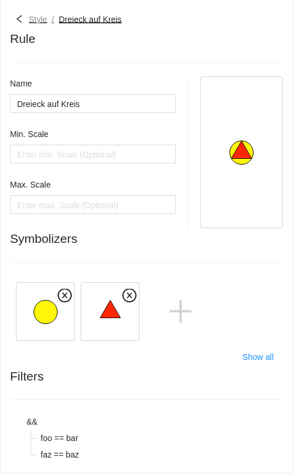

Jan Suleiman

- M.Sc. Geoinformatics
- Full-Stack Developer
@terrestris, Bonn, Germany - GeoStyler Core Developer
Content
What is GeoStyler?
- Graphical style-editor for geodata
- Converter of styling formats

What is GeoStyler?
Graphical style-editor for geodata


What is GeoStyler?
Which problems solves GeoStyler?
Which problems solves GeoStyler?
Which problems solves GeoStyler?
New Features
i18n
French and Hungarian translationsAdditional languages: 🇨🇳 🇺🇸 🇩🇪 🇪🇸
New Features
Layout
Card Layout BetaEspecially useful when having limited widths
 


New Features
Layout
Card Layout BetaEspecially useful when having limited widths
New Features
Attributive labels
Land: {{federal_state}}
Population: {{pop}}

New Features
⬇
 Classification with expressions
Classification with expressions
Classification with expressions